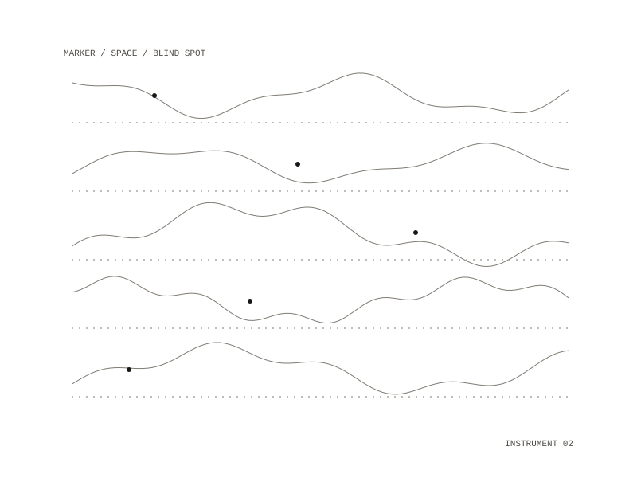

newmusic
An instrument whose eight controls are aesthetic markers rather than parameters. Most recommenders converge: they model your ear and return more of what it already recognises. This builds the model precisely and then runs it backwards — to find and play the combinations your ear has never had to hold.

How it runs
You set eight controls, which give a target marker vector; a local model proposes a score specification; the specification is realized as events, measured against the markers, and adjudicated in a loop until it lands where you pointed.
Status
Honest state, 23 August 2026. Working: the event model, all seven analyzers, the eleven anchor fixtures, the 128-cell space and its blind-spot finder, spec realization, the adjudicator loop, MPE MIDI and MusicXML export, and the interface — 86 tests, two of which need a local model.
What builds on it
sounds-like pins this repository as a git dependency and supplies the sound it deliberately lacks.
MPE MIDI
MusicXML